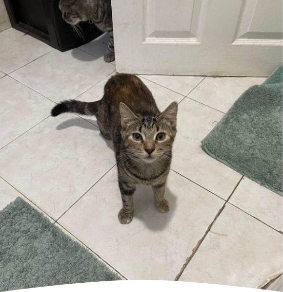
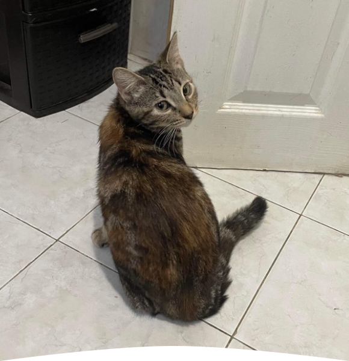
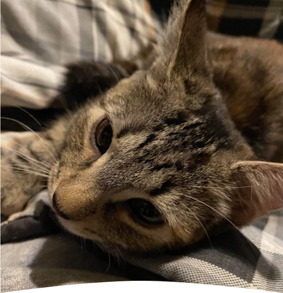
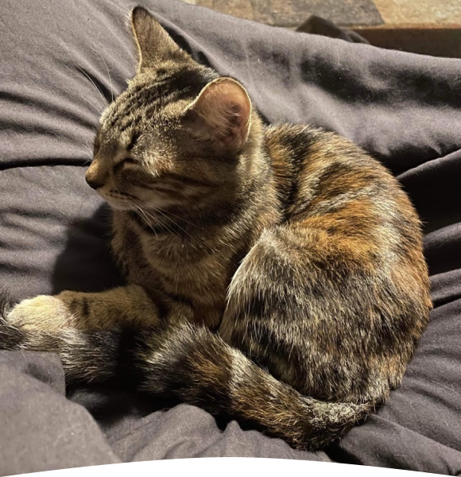

Emanuel
Kitten • Domestic Short Hair 1 mile away
Meet Emmanuel
Emanuel is a young, lovable boy looking to be the newest member of your family. He’s well behaved, affectionate, playful, and loves cuddles. He is cat friendly too!

Stray Cat Relief Fund
PO Box 54845
Philadelphia, PA 19148
straycatrelieffund@gmail.com
(267) 507-5297